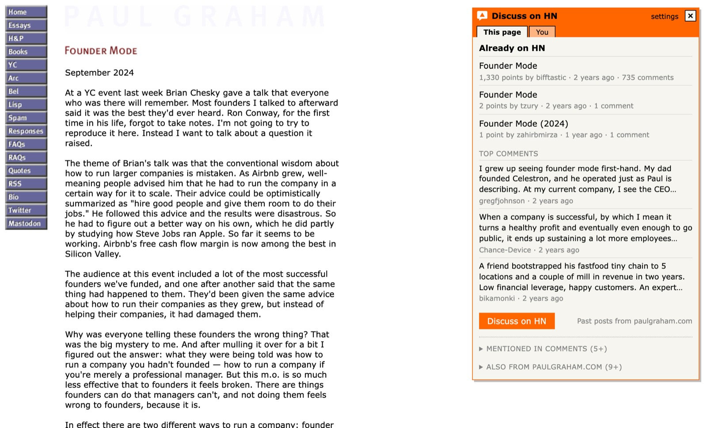
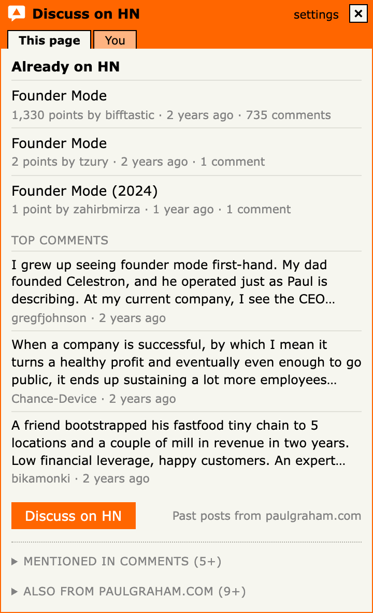
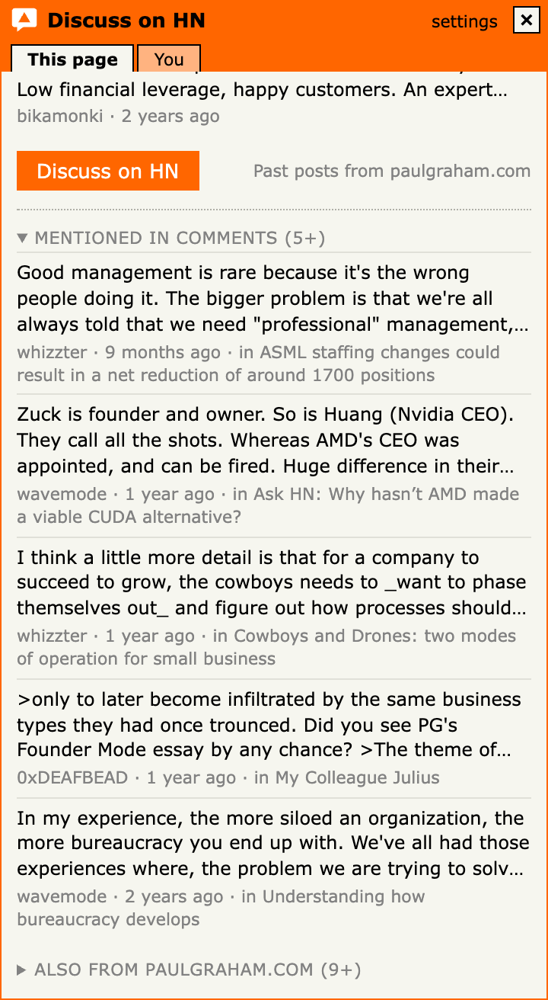
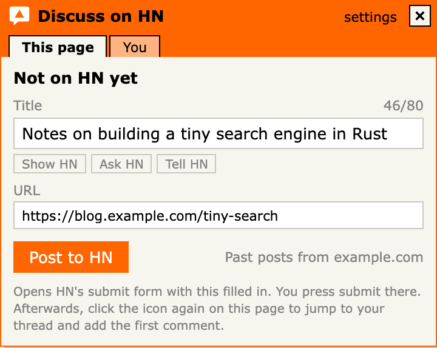
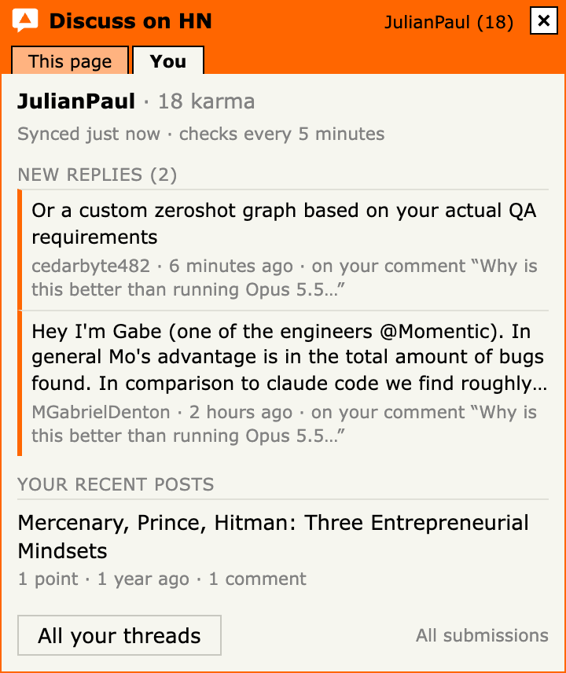
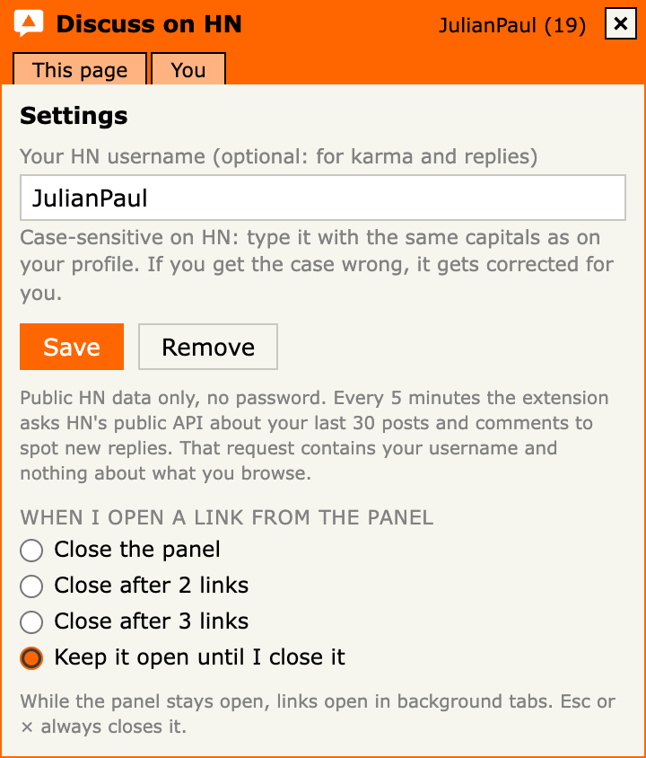

Discuss on HN shows you the Hacker News conversation about the page you're on. Chime into the thread that exists, start it if it doesn't, never double-post, and never miss a reply.
No account, no tracking, no AI. Not affiliated with Y Combinator or Hacker News.
paulgraham.com/kids.html


How it works
Three steps, then it's one click on any page.
Add it to ChromeInstall from the Chrome Web Store and pin the orange speech bubble to your toolbar.
Find something interestingAn article, a repo, a paper, a launch. Anywhere on the web.
Click the bubbleOr press Alt+Shift+Y. A small HN-style panel tells you whether people are already talking about it, and takes you into the conversation.
What you get
Chime in · never double-post
Join the conversation where it already is
Every Hacker News thread for the page, with points, comments and age, and the top comments in HN's own ranking. You see where the discussion stands before you jump in, and one click takes you to the thread.
It finds the page even on tracking-link and AMP versions of the address, so you join the existing thread instead of posting a duplicate.
See the whole conversation
Related discussions, not just one thread
Comments anywhere on HN that linked to the page, and the best-received posts from the same site. Often the most interesting discussion is one you'd never have found.

Start it
Not on HN yet? Post it properly
"Post to HN" opens Hacker News' own submit form with the address and a clean title. Site names like "| The Verge" are trimmed, and gentle nudges follow HN's guidelines: drop the "!", lose the list number, add [pdf] or [video]. You press submit yourself.

Stay in it
The bubble remembers, so you don't have to
A tab is gone the moment you close it. The bubble stays in your toolbar. Set your HN username and it lights up when someone replies to your posts or comments, shows "+N new" comments on your recent posts, and how your karma moved.

At your pace
Open a few threads, keep the panel
Have the panel close when you open a link, after two or three, or keep it open while threads load in background tabs. Sections remember whether you left them open.

A good HN citizen
Never posts for youIt opens HN's own form. Posting, voting and commenting stay with you, as HN's guidelines ask.
No AI, everNothing is generated. What you post and write is yours.
Private by designNo servers, accounts or analytics. It talks only to HN's public APIs, only when you click, with tracking and token-like parameters stripped first.
No site accessNo host permissions: it can only see the tab you clicked the bubble on. Privacy policy
Questions
Is it free?
Yes, completely. It's open source under the MIT license. There's nothing to buy and no account to create.
Does it post to Hacker News for me?
No. "Post to HN" opens Hacker News' own submit form with the title and address filled in, the same way HN's official bookmarklet does. You review it and press submit yourself.
Do I need a Hacker News account?
Not to see threads and comments. To post or comment you use your normal HN login on news.ycombinator.com. Setting your username in the extension is optional; it only powers the reply badge and the You tab.
What does it send, and to whom?
When you click the bubble, the cleaned page address goes to Hacker News' public search API (hn.algolia.com) to find threads, and to HN's official API for comments. With a username set, it checks HN's API for replies every 5 minutes; that request contains only your public username. Nothing is sent while you browse. Full details in the privacy policy.
Which browsers does it work in?
Chrome, and Chromium-based browsers that install from the Chrome Web Store, such as Edge, Brave, Arc and Dia.
Is it made by Hacker News or Y Combinator?
No. It's an independent, unofficial tool by Julian Paul.